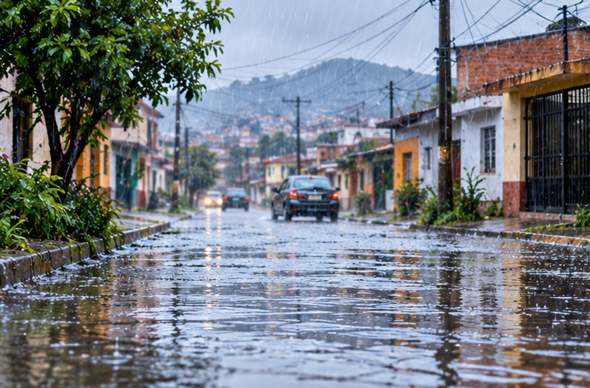
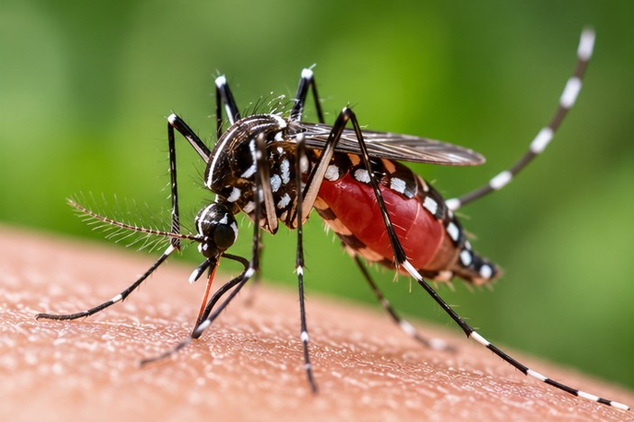
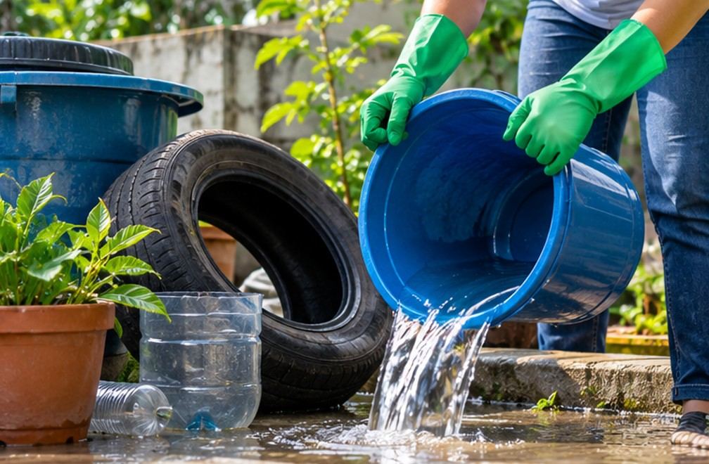

Plataforma comunitaria para prevenir el dengue durante el Fenómeno El Niño. Aprende a identificar criaderos, reporta zonas vulnerables y ayuda a proteger tu comunidad.
Descubre más¿Qué está pasando?
Las lluvias intensas pueden generar acumulación de agua en calles, patios y viviendas. Estos espacios pueden convertirse en criaderos del mosquito Aedes aegypti, transmisor del dengue.

Fenómeno El Niño
Durante periodos de lluvias intensas pueden aparecer charcos, recipientes llenos de agua y zonas inundadas. Si permanecen así durante varios días, pueden convertirse en lugares favorables para la reproducción del mosquito.

Aedes aegypti
El mosquito puede aprovechar recipientes pequeños que acumulen agua. No se necesita una gran cantidad para que exista un posible criadero.
Cuida tu salud
Si presentas síntomas, busca orientación en un establecimiento de salud.

Prevenir está en nuestras manos
Participa
Aprende, identifica los riesgos y participa junto a tu comunidad.